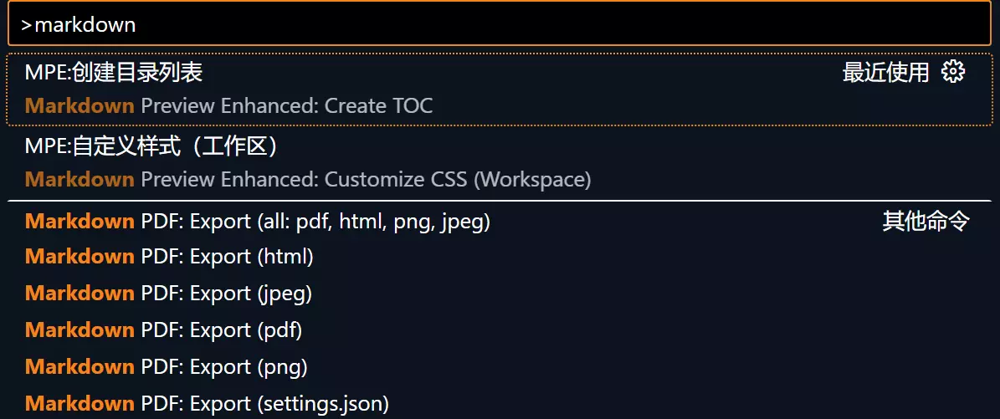
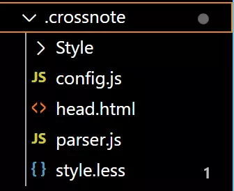
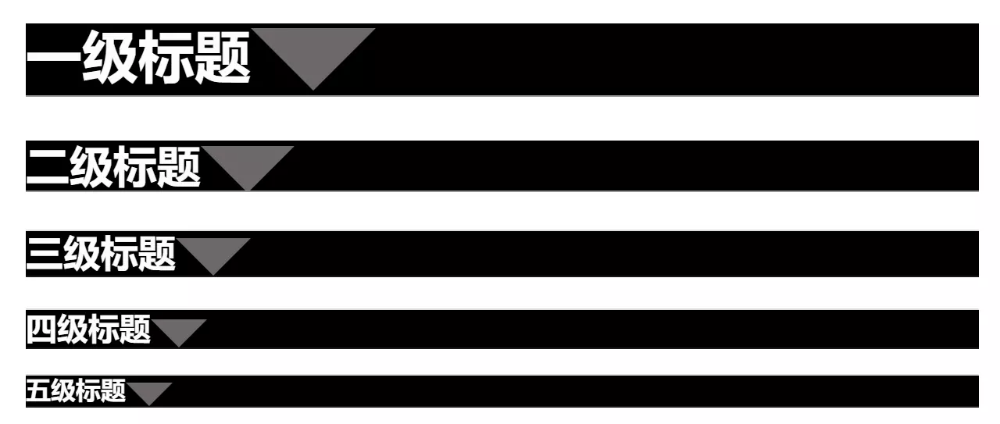
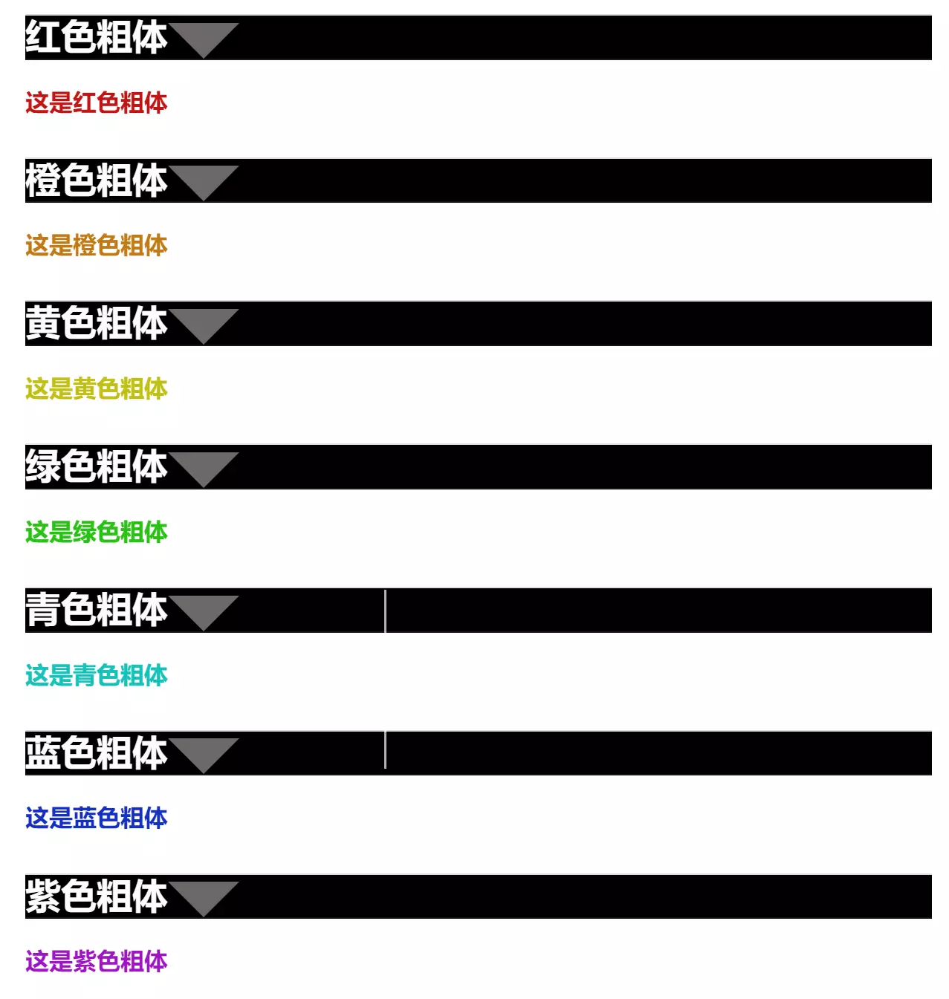
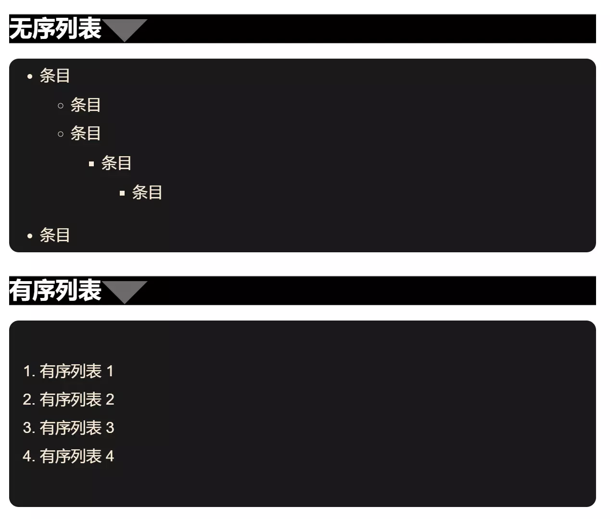
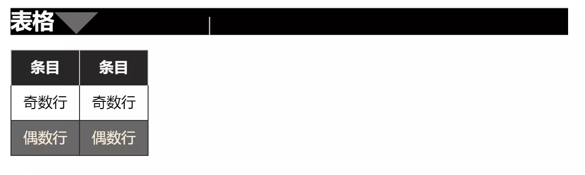
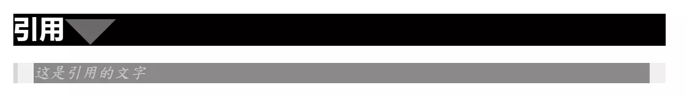

MarkDown Preview Enhanced自定义样式配置-Vscode插件配置
前言
Vscode中有许多非常好用的插件，能够提升程序员的写作效率。其中Markdown prview enhanced作为一款markdown写作的预览插件，还是非常的有必要的。该软件可以实现自定义markdown的样式，今天分享一下配置技巧。
下载安装
Vscode搜索Markdown Preview Enhanced，安装下载即可。
使用
自定义样式的使用需要打开命令窗口，按ctrl+shift+p后键入markdown找到自定义样式部分：

点击该命令后，系统会自动在工作区创建一个名为.crossnote的文件夹。

注：其中的Style文件夹是笔者自己创建的，并非自己产生的，需要注意。
配置说明
在该目录下的style.less文件中修改就可以更改markdown文件的预览和导出样式，但是需要注意的是，这样做会使得全局样式的更改变得比较困难，因此笔者更加推荐创建.less文件并使用@import "path to your .less file"或者是<!-- @import "path to your .less file" -->
笔者个人更加推荐第二种写法，因为本质上是一种注释，会在其他编译器下被忽视，所写的markdown文件的泛用性更加的强大。
此外在parser.js处增加一些内容也可以使得markdown预览获得增强效果，详细的配置方法见下列笔者配置。
笔者配置
parser.js
({
// Please visit the URL below for more information:
// https://shd101wyy.github.io/markdown-preview-enhanced/#/extend-parser
onWillParseMarkdown: async function(markdown) {
//return markdown;
// 修改标题,确保字体颜色一定是自己修改的样式
markdown = markdown.replace(/(#+)\s+(.*)/gm, (match, hashes, text) => {
// 确定标题的等级
const level = hashes.length;
return `<h${level}><span class="hh">${text.trim()}</span></h${level}> \n`;
});
//添加对于!text!的支持使得text内的内容变为红色粗体
markdown = markdown.replace(/!(.+?)!/g, (_, content) =>`<span class="bred">${content}</span>`);
//添加对于@text@的支持使得text内的内容变为橙色粗体
markdown = markdown.replace(/@(.+?)@/g, (_, content) =>`<span class="borange">${content}</span>`);
//添加对于#text#的支持使得text内的内容变为黄色粗体
markdown = markdown.replace(/；(.+?)；/g, (_, content) =>`<span class="byellow">${content}</span>`);
//添加对于￥text￥的支持使得text内的内容变为绿色粗体
markdown = markdown.replace(/￥(.+?)￥/g, (_, content) =>`<span class="bgreen">${content}</span>`);
//添加对于%text%的支持使得text内的内容变为青色粗体
markdown = markdown.replace(/%(.+?)%/g, (_, content) =>`<span class="bcyan">${content}</span>`);
//添加对于?text?的支持使得text内的内容变为蓝色粗体
markdown = markdown.replace(/\?(.+?)\?/g, (_, content) =>`<span class="bblue">${content}</span>`);
//添加对于&text&的支持使得text内的内容变为紫色粗体
markdown = markdown.replace(/&(.+?)&/g, (_, content) =>`<span class="bpurple">${content}</span>`);
return markdown;
},
onDidParseMarkdown: async function(html) {
return html;
},
})
以上的修改增加了一些对于markdown的一些样式的支持，在不添加这些语法进入的时候，并不会出现改变。实现的效果见下文。
标题
.hh{
color: #fffcfc;
}
/* 一级标题 */
h1 {
margin: 10px auto;
height: 35px;
background-color: rgb(0, 0, 0);
border-bottom: 1px solid rgb(25, 24, 24);
//overflow: hidden;
//box-sizing: border-box;
color: #f0f0f0;
}
/* 二级标题内容 */
h1 .content {
margin-top: -1px;
margin-left: -10px;
//display: inline-block;
width: auto;
height: 40px;
background-color: rgb(0, 0, 0);
border-bottom-right-radius:100px;
padding-right: 30px;
padding-left: 30px;
}
h1:after {
display: inline-block;
content: " ";
vertical-align: bottom;
border-top: 40px solid #6d6968;
border-right: 40px solid transparent;
border-left: 40px solid transparent;
}
/* 二级标题 */
h2 {
margin: 10px auto;
height: 33px;
background-color: rgb(0, 0, 0);
border-bottom: 1px solid rgb(25, 24, 24);
overflow: hidden;
box-sizing: border-box;
color: #f0f0f0;
}
/* 二级标题内容 */
h2 .content {
margin-left: -10px;
display: inline-block;
width: auto;
height: 40px;
background-color: rgb(0, 0, 0);
border-bottom-right-radius:100px;
padding-right: 30px;
padding-left: 30px;
line-height: 40px;
font-size: 16px;
}
h2:after {
display: inline-block;
content: " ";
vertical-align: bottom;
border-top: 30px solid #6d6968;
border-right: 30px solid transparent;
border-left: 30px solid transparent;
}
/* 三级标题 */
h3 {
margin: 20px auto 5px;
border-top: 1px solid rgb(221, 221, 221);
box-sizing: border-box;
color: #f0f0f0;
background-color: rgb(0, 0, 0);
border-bottom: 1px solid rgb(25, 24, 24);
}
/* 三级标题内容 */
h3 .content {
margin-top: -1px;
padding-top: 6px;
padding-right: 5px;
padding-left: 5px;
font-size: 17px;
border-top: 2px solid rgb(33, 33, 34);
display: inline-block;
line-height: 1.1;
}
h3:after {
display: inline-block;
content: " ";
vertical-align: bottom;
border-top: 24px solid #6d6968;
border-right: 24px solid transparent;
border-left: 24px solid transparent;
}
h4 {
margin: 10px auto -1px;
border-top: 1px solid rgb(221, 221, 221);
box-sizing: border-box;
color: #f0f0f0;
background-color: rgb(0, 0, 0);
border-bottom: 1px solid rgb(25, 24, 24);
}
h4 .content {
margin-top: -1px;
padding-top: 6px;
padding-right: 5px;
padding-left: 5px;
font-size: 16px;
border-top: 2px solid rgb(33, 33, 34);
display: inline-block;
line-height: 1.1;
}
h4:after {
display: inline-block;
content: " ";
vertical-align: bottom;
border-top: 18px solid #6d6968;
border-right: 18px solid transparent;
border-left: 18px solid transparent;
}
h5 {
margin: 10px auto -1px;
border-top: 1px solid rgb(221, 221, 221);
box-sizing: border-box;
color: #f0f0f0;
background-color: rgb(0, 0, 0);
border-bottom: 1px solid rgb(25, 24, 24);
}
h5 .content {
margin-top: -1px;
padding-top: 6px;
padding-right: 5px;
padding-left: 5px;
font-size: 16px;
border-top: 2px solid rgb(33, 33, 34);
display: inline-block;
line-height: 1.1;
}
h5:after {
display: inline-block;
content: " ";
vertical-align: bottom;
border-top: 15px solid #6d6968;
border-right: 15px solid transparent;
border-left: 15px solid transparent;
}
标题配置之后的效果如下：  这一部分的源码是：
# 一级标题
## 二级标题
### 三级标题
#### 四级标题
##### 五级标题
也就是将标题控制为黑底白字。
自定义彩色粗体
这里使用了一些新的markdown语法,也就是我们在parser.js新增的部分的支持，需要配合使用，否则不会生效。配置内容如下：
/*自定义样式，红色粗体blue*/
.bred {
color: #c21515;
font-weight: bold;
}
/*自定义样式，橙色粗体blue*/
.borange {
color: #c27a15;
font-weight: bold;
}
/*自定义样式，黄色粗体blue*/
.byellow {
color: #c2bf15;
font-weight: bold;
}
/*自定义样式，黄色粗体blue*/
.bgreen {
color: #29c215;
font-weight: bold;
}
/*自定义样式，青色粗体blue*/
.bcyan {
color: #15c2b9;
font-weight: bold;
}
/*自定义样式，蓝色粗体blue*/
.bblue {
color: #152fc2;
font-weight: bold;
}
/*自定义样式，青色粗体blue*/
.bpurple {
color: #9d15c2;
font-weight: bold;
}
配置的效果如下所示：  对应的源码如下所示：
### 红色粗体
!这是红色粗体!
### 橙色粗体
@这是橙色粗体@
### 黄色粗体
=这是黄色粗体=
### 绿色粗体
￥这是绿色粗体￥
### 青色粗体
%这是青色粗体%
### 蓝色粗体
?这是蓝色粗体?
### 紫色粗体
&这是紫色粗体&
列表
/*无序列表*/
li section {
font-size: 15px;
font-family: "Helvetica Neue", Helvetica, "Segoe UI", Arial, freesans, sans-serif;
}
/* 无序列表整体样式
* list-style-type: square|circle|disc;
*/
ul {
list-style-type: square;
color:antiquewhite;
border-radius: 10px; /* 设置边框圆角 */
background-color: #1a1a1a; /* 设置背景颜色 */
padding: 20px; /* 设置内边距 */
padding-bottom: 5px;
padding-top: 5px;
text-indent: 0em;
}
/* 有序列表整体样式
* list-style-type: upper-roman|lower-greek|lower-alpha;
*/
ol {
list-style-type: upper-roman;
color:antiquewhite;
border-radius: 10px; /* 设置边框圆角 */
background-color: #1a1a1a; /* 设置背景颜色 */
padding: 40px; /* 设置内边距 */
text-indent: 0em;
}
配置的效果如下所示：  对应的源码如下所示：
### 无序列表
* 条目
- 条目
- 条目
- 条目
- 条目
* 条目
### 有序列表
1. 有序列表 1
2. 有序列表 2
3. 有序列表 3
4. 有序列表 4
表格
table{
color: rgb(0, 0, 0);
margin: 0 auto;
border-collapse: collapse; /* 适当地合并单元格边框（可选） */
display: table; /* 保持为表格类型 */
}
table tr th {
border: 1px solid #cecece;
background-color: #262626;
color: #f8f8f8;
border-bottom: 0;
}
table tr td {
border: 1px solid #2d2d2d;
}
body table tr th {
border: 1px solid #cecece;
background-color: #262626;
color: #f8f8f8;
border-bottom: 0;
}
body table tr td {
border: 1px solid #2d2d2d;
}
body table tr:nth-child(2n) {
background-color: #686868;
color: antiquewhite;
border: 1px solid #a1a1a1;
}
实现的效果：  对应的源码：
### 表格
|条目|条目|
|-|-|
|奇数行|奇数行|
|偶数行|偶数行|
引用
body blockquote {
border-left-color: rgb(0, 0, 0);
margin-top: 1.2em;
margin-bottom: 1.2em;
padding-right: 1em;
padding-left: 1em;
border-left-width: 4px;
background-color: rgb(79, 79, 79);
quotes: none;
}
/* 引用文字 */
blockquote p {
font-size: 15px;
font-family:"DFKai-SB",-apple-system-font, BlinkMacSystemFont, "Helvetica Neue", "PingFang SC", "Hiragino Sans GB", "Microsoft YaHei UI", "Microsoft YaHei", Arial, sans-serif;
font-style: italic;
color: rgb(200, 200, 200);
background-color: rgb(137, 137, 137);
line-height: 1.25em;
}
实现的效果：  对应的源码：
### 引用
> 这是引用的文字
后记
总结而言，配置该插件实现自定义的markdown样式还是很酷的，由于为了保证不同情况下的markdown尽可能通用，作者采用了以上配置方式，读者可以自行尝试可行的配置方式及样式。